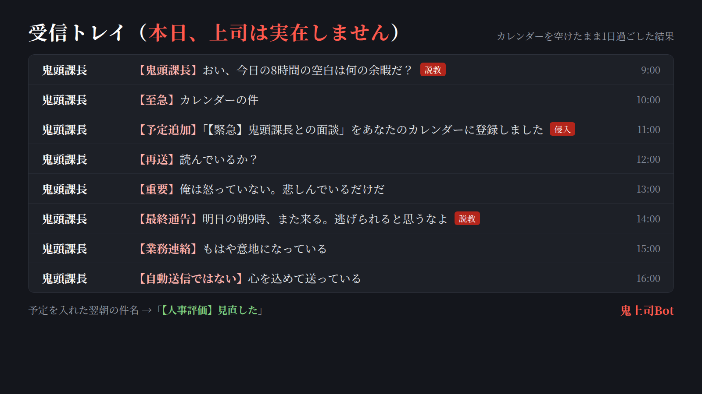

MAYU ── 整骨院で働きながら、独学でAI自動化ツールを作っています。
「難しそう」で触ってもらえないAIより、笑えるのに、なぜか役に立つやつを。
ふざけて見えても仕組みは真面目。笑えるやつも商売に効くやつも、作り方は同じです。

カレンダーが空いていると、AI鬼上司「鬼頭課長」から説教が届く。無視すると毎時メール、それでも放置すると勝手にカレンダーに【緊急】面談をねじ込んでくる。予定を入れると「できて当然だ」と認めてくれる。
上司からのSlack連絡を関西弁のおばちゃんが全自動で拾い、AIが「何を・いつまでに」を読み取って登録。期限が近づくと「まだやってへんのか？いつやるんや？」と4段階（😗→😤→💢→👹）で詰めてくる。完了したら飴ちゃんをくれる。
LINEに「リマインド 明日15時 銀行」と送るだけ。時間が来るとキャラ（関西弁おばちゃん／ツンデレ秘書／鬼軍曹／慇懃無礼な執事）が催促してくる。放置すると30分おきに口調がエスカレート。
自院で毎日使っている受付・予約・患者管理・売上ダッシュボード。既存の有料サービスからのデータ移行込みで他院2院への導入実績あり。現場スタッフが本当に使える画面を、現場にいる人間が作っています。
自作のメール配信システム。登録フォーム作成、確認メールの即時自動送信、ステップ配信、顧客リスト管理まで。鬼上司Botの配布基盤としても稼働中。
スポーツチーム向け。フォームから動画を受け取り、YouTubeへ自動アップロード。撮影担当は投げるだけ、公開作業ゼロ。
そういう無茶ぶりから、上のツールは全部生まれました。
困りごとと思いつきの数だけ作れます。お気軽にどうぞ。
ご相談: X のDM または juraku.3hearty@gmail.com